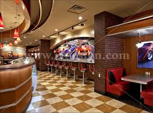

Our New Menu
Little Lemon is owned by two Italian brothers, Mario and Adrian, who moved to the United States to pursue their shared dream of owning a restaurant.
To craft the menu, Mario relies on family recipes and his experience as a chef in Italy.
Crispy tofu burnt ends, pickled veggies, fresh herbs, crispy onions, jalapeño relish, sticky garlic, aioli, hoagie roll (vegetarian - can be made vegan on request) $10.50.
For the Fed Xmas Feast package, order by Monday 12/19 and schedule a Friday 12/23 pickup.
Book a Table

Adrian does all the marketing for the restaurant and led the effort to expand the menu beyond classic Italian to incorporate additional cuisines from the Mediterranean region.
The Holidays are for Giving! What better way than to gift Federalist Pig to the ones you love? An added bonus this year, is that our FedPig Gift Cards are redeemable across our family of brands, including Ted's Bulletin, Michelin Bib Gourmand Winner Honeymoon Chicken, your favorite bookstore Kramers, Ensemble Digital Kitchen, and Sidekick Bakery.
Opening Hours

Whether it's a place with communal outdoor tables where you wolf down a taco, salsa dribbling down your arm, or a swanky fine-dining joint for a four-course dinner,
everywhere on our list serves up incredible food you won't forget. This is your guide to eating out in the capital in 2022. Tuck in.
So come on in and get to know our small, passionate, and hardworking crew of folks.
MONDAY - THURSDAY (11AM - 9PM)
FRIDAY + SATURDAY (1 PM - 10PM)
SUNDAY (Closed)